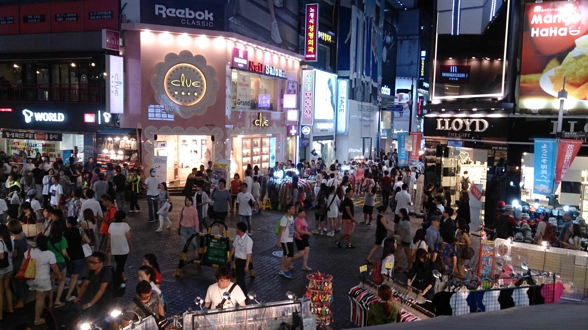
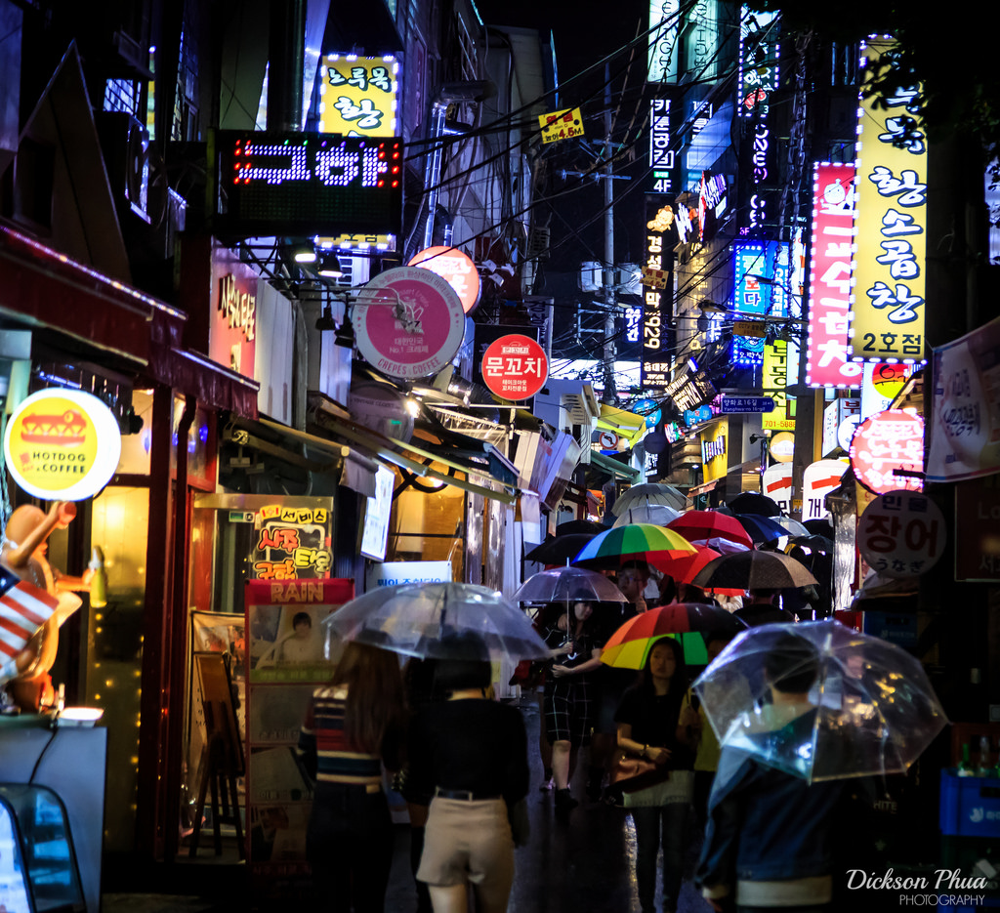
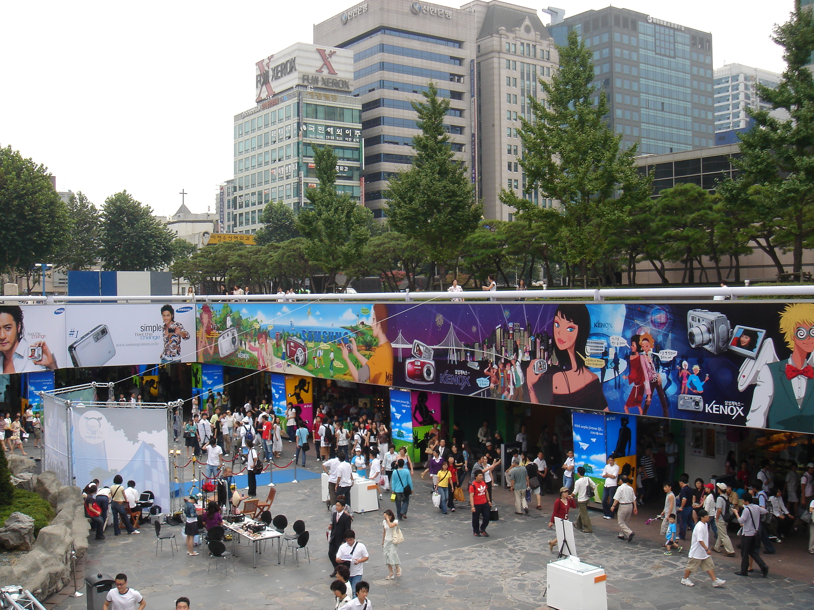

≫
Myeongdong (Hangul: 명동; literally 'bright cave' or 'bright tunnel) is a dong in Jung-gu, Seoul, South Korea between Chungmu-ro, Eulji-ro, and Namdaemun-ro. It covers 0.99 km² with a population of 3,409 and is mostly a commercial area, being one of Seoul's main shopping and tourism districts. In 2011, 2012 and 2013, Myeong-dong was listed as the ninth most expensive shopping street in the world. The area is known for its two historically significant sites, namely the Myeongdong Cathedral and the Myeongdong Nanta Theatre.
The Hongdae (Hangul: 홍대) is a region in Seoul, South Koreanear Hongik University, after which it is named. It is known for its urban artsand indie music culture, clubs and entertainments. The area is located in Mapo-gu in the western end of Seoul, stretching from Seogyo-dong to Hapjeong-dong.
The Hongdae area is known as a trendy cafe and nightlife area for students and is well known for its indie scene, urban street arts, and underground musicians. Many known bands like Jaurim, Crying Nut and Peppertones are from this street and started as indie bands. The area provides street artfestivals and performances, as well as music concerts by independent artists and mainstream entertainers.
Under the influence of Hongik University (Hongdae) which is well known for its prestigious art college, the neighborhood was built on a foundation of artistic souls since the 1990s. In the early days, thanks to then-cheap rent, budget musicians and street artists started moving into the ateliers of the Hongdae area. Many have transformed now into cafes or live music venues and the area has a reputation as the mecca of urban arts and underground club culture.
The Gangnam District (Hangul: 강남구) is one of the 25 local government districts which make up the city of Seoul, South Korea. Gangnam literally means "South of the River”. Both the Greater Gangnam Area and Gangnam itself are widely known for its heavily concentrated wealth and high standard of living, which has been compared to cities such as Beverly Hills, California.
The important business district around Teheranno (Tehran Street) runs east-west from Gangnam Station to Samseong Station and the COEX Convention & Exhibition Center-Korean World Trade Center complex. Several popular shopping and entertainment areas are located in Gangnam District, including Apgujeong, the COEX Mall and the area around Gangnam Station and Garosugil. Cheongdam-dong is notable as an upmarket shopping area, with stores of global and local luxury brands, such as MCM Haus flagship store;[16] Vera Wang's third global and first Asian flagship store 'Vera Wang Bridal Korea'; as well as French jeweler Cartier's Cartier Maison, located on Apgujeong-ro, which is the largest in Korea and at the time of opening, in 2008, the seventh largest in the world.
The area has a large concentration of vegetarian and other upscale restaurants that serve Korean cuisine with a modern twist, namely on the main street from Bongeun Temple to Park Hyatt Hotel in Samseong-dong.